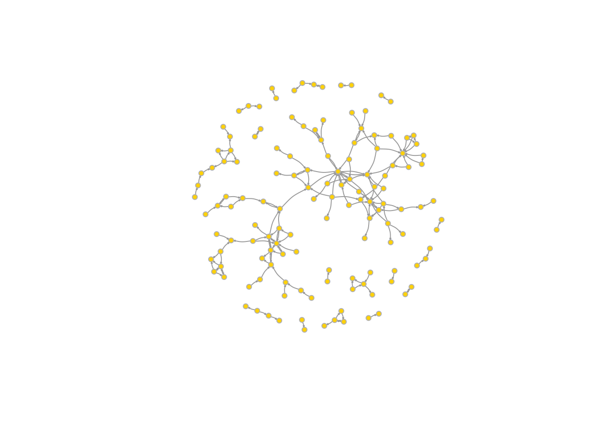
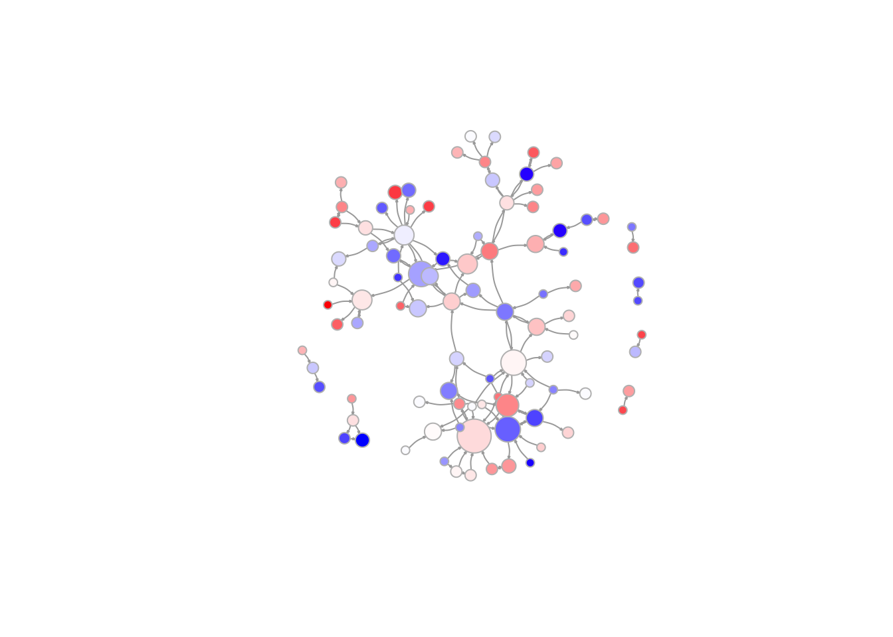
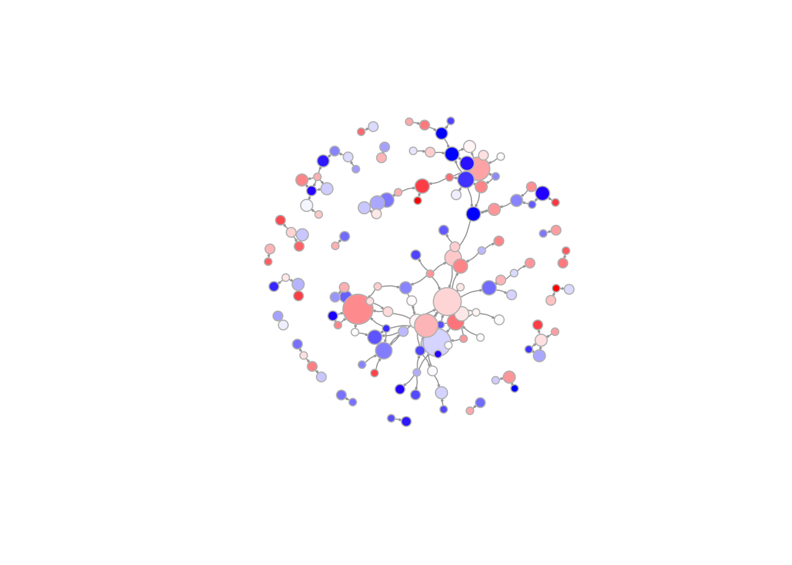
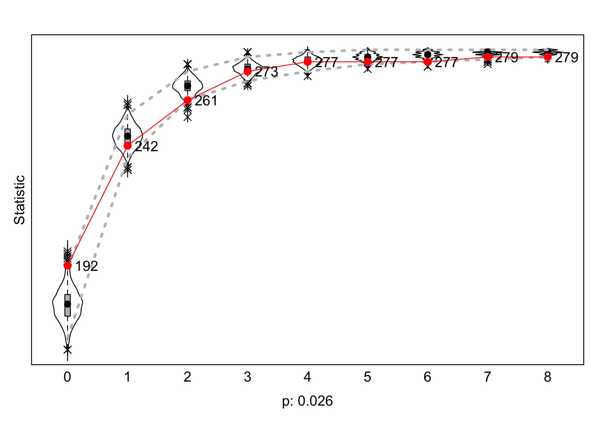

#clean
rm(list = ls())
#check package function
fpackage.check <- function(packages) {
lapply(packages, FUN = function(x) {
if (!require(x, character.only = TRUE)) {
install.packages(x, dependencies = TRUE)
library(x, character.only = TRUE)
}
})
}
#save function
fsave <- function(x, file = NULL, location = "./data/processed/") {
ifelse(!dir.exists("data"), dir.create("data"), FALSE)
ifelse(!dir.exists("data/processed"), dir.create("data/processed"), FALSE)
if (is.null(file))
file = deparse(substitute(x))
datename <- substr(gsub("[:-]", "", Sys.time()), 1, 8)
totalname <- paste(location, datename, file, ".rda", sep = "")
save(x, file = totalname) #need to fix if file is reloaded as input name, not as x.
}
#load function
fload <- function(filename) {
load(filename)
get(ls()[ls() != "filename"])
}
#nice view function
fshowdf <- function(x, ...) {
knitr::kable(x, digits = 2, "html", ...) %>%
kableExtra::kable_styling(bootstrap_options = c("striped", "hover")) %>%
kableExtra::scroll_box(width = "100%", height = "300px")
}
#check packages
packages = c("RSiena", "RsienaTwoStep", "tidyverse", "stringdist", "stringi", "installr", "foreign", "jsonlite", "openalexR", "scholar", "rvest", "igraph", "tidyr", "dplyr")
fpackage.check(packages)
#load
demographics <- read_csv("data_final.csv", show_col_types = F)
nets <- readRDS("nets.rds")
dim(nets) #rightTo get an overview of how the networks change in their structure and composition, I provided network statistics for both waves, together with some network visualizations. From these numbers, several things become clear. Whether looking at dyads, triads or transitivity measures, the network seems to become more evolved and complex in wave 2. Partly, this makes perfect sense, as wave 2 is ‘filled’ with more collaborations, since authors who are present in wave 2 might not have been present yet in wave 1 (but not vice versa!). Table 1 shows that wave 2 saw an increase of ties (i.e. collaborations between authors) from 138 to 182. Furthermore, as can be seen in Table 2, the dyad censuses show an increase in mutual and asymmetric dyads, and a decrease in unconnected nodes. With respect to triads, then, Table 3 shows that there is a decrease in “empty” triads (the 003 graph). Interestingly, and already suggesting increased centralization, is the significant increase in 021C triads. These triads reflect the A->B<-C relationships present in the network, were one node adopts a central role for two other nodes. Importantly, there is no relationship between A and C in this triad. While wave 1 has only 82 of these relations, wave 2 has 144, therefore suggesting the emergence of central nodes in the network. Moreover, Table 4 shows an increase in transitivity, from 0.12 at wave1 to 0.20 at wave 2. This shows an increase in clustering (the “friends of friends become friends” adagium). In other words, at wave 2, the probability of finding a closed triad is 0.2.
#Make igraph object
graph_w1 <- igraph::graph_from_adjacency_matrix(
nets[1,,], #now, I take the first wave
mode = c("directed"),
weighted = NULL,
diag = FALSE,
add.colnames = NULL
)
graph_w2 <- igraph::graph_from_adjacency_matrix(
nets[2,,], #now, I take the second wave
mode = c("directed"),
weighted = NULL,
diag = FALSE,
add.colnames = NULL
)
#count nodes
network_nodes_edges <- data.frame(
nodes_w1 = vcount(graph_w1), # Number of vertices in wave 1
nodes_w2 = vcount(graph_w2), # Number of vertices in wave 2
edges_w1 = ecount(graph_w1), # Number of edges in wave 1
edges_w2 = ecount(graph_w2) # Number of edges in wave 2
)
fshowdf(network_nodes_edges)| nodes_w1 | nodes_w2 | edges_w1 | edges_w2 |
|---|---|---|---|
| 282 | 282 | 138 | 182 |
#count dyads
network_dyads <- data.frame(
dyads_w1 = dyad_census(graph_w1),
dyads_w2 = dyad_census(graph_w2)
)
fshowdf(network_dyads)| dyads_w1.mut | dyads_w1.asym | dyads_w1.null | dyads_w2.mut | dyads_w2.asym | dyads_w2.null |
|---|---|---|---|---|---|
| 17 | 104 | 39500 | 20 | 142 | 39459 |
#count tryads
network_triads <- data.frame(
triads_w1 = triad_census(graph_w1),
triads_w2 = triad_census(graph_w2)
)
# R does not give row names for the triads. So:
triad_types <- c("003", "012", "102", "021D", "021U", "021C", "111D", "111U",
"030T", "030C", "201", "120D", "120U", "120C", "210", "300")
rownames(network_triads) <- triad_types
fshowdf(network_triads)| triads_w1 | triads_w2 | |
|---|---|---|
| 003 | 3664454 | 3653014 |
| 012 | 28497 | 39068 |
| 102 | 4651 | 5494 |
| 021D | 72 | 61 |
| 021U | 82 | 144 |
| 021C | 89 | 67 |
| 111D | 49 | 53 |
| 111U | 46 | 26 |
| 030T | 11 | 14 |
| 030C | 0 | 1 |
| 201 | 4 | 3 |
| 120D | 1 | 3 |
| 120U | 2 | 3 |
| 120C | 1 | 4 |
| 210 | 1 | 4 |
| 300 | 0 | 1 |
network_trans <- data.frame(
trans_w1 = transitivity(graph_w1),
trans_w2 = transitivity(graph_w2)
)
fshowdf(network_trans)| trans_w1 | trans_w2 |
|---|---|
| 0.12 | 0.2 |
Below, I plotted the two networks at wave1 and wave 2 (see Figure 1 and Figure 2). To get a clearer picture, all the isolates (authors who did not collaborate on any work at the respective time frame) were removed. However, this may cause the network to look ‘fuller’ than it is in reality. Still, a few things become clear. As mentioned before, one can see that wave 2 is a more complex network, with a higher density and with the nodes being more connected to each other. Furthermore, the network at wave 2 shows also more signs of clustering, in line with the increase in transitivity/clustering mentioned above. Again, the visualization algorithm “suppresses” the differences between the networks because isolates are removed, meaning that in reality the differences are “even” bigger.
isolates_w1 <- which(degree(graph_w1) == 0)
no_isolatesw1 <- delete_vertices(graph_w1, isolates_w1)
isolates_w2 <- which(degree(graph_w2) == 0)
no_isolatesw2 <- delete_vertices(graph_w2, isolates_w2)
plot(no_isolatesw1,
vertex.color = "gold",
vertex.size = 4,
vertex.frame.color = "gray",
vertex.label = NA,
edge.curved = 0.2,
edge.arrow.size = 0.1) plot(no_isolatesw2,
vertex.color = "gold",
vertex.size = 4,
vertex.frame.color = "gray",
vertex.label = NA,
edge.curved = 0.2,
edge.arrow.size = 0.1)
Figure 3 and Figure 4 again show the networks at wave1 and wave2. However, node size is made dependent on indegrees, while colors are made dependent on the interdisciplinarity (SDI) score of an author. Big nodes represent authors with many indegrees, whereas red nodes represent authors with a high SDI score. Going back to our hypothesis 1 and 2, one would expect to see big and red nodes in wave 2. Expectations were that the evolution of the network would show the emergence of central, interdisciplinary nodes. At first glance, this seems to be the case. The big nodes in wave 2 also have a relatively high interdisciplinarity score, suggesting a correlation between interdisciplinarity and SDI score.
# Compute indegrees (in-degree for each vertex)
indegrees_w1 <- degree(no_isolatesw1, mode = "in")
#install.packages("scales")
library(scales)
# Scale indegree values for vertex size (optional)
scaled_sizes_w1 <- rescale(indegrees_w1, to = c(5, 20)) # Scale indegree values for visual size
# Create a contrasting color gradient from blue (low) to red (high)
color_gradient <- colorRampPalette(c("blue", "white", "red"))(100) # 100 shades from blue to red
# Map SDI_f values to colors in the gradient
vertex_colors <- color_gradient[as.numeric(cut(demographics$SDI_f, breaks = 100))]
# Plot the network considering indegrees and SDI as vertex attributes
plot(no_isolatesw1,
vertex.color = vertex_colors, # Apply colors based on SDI
vertex.size = scaled_sizes_w1, # Apply sizes based on indegree
vertex.frame.color = "gray",
vertex.label = NA,
edge.curved = 0.2,
edge.arrow.size = 0.1) 
# Compute indegrees (in-degree for each vertex)
indegrees_w2 <- degree(no_isolatesw2, mode = "in")
# Scale indegree values for vertex size (optional)
scaled_sizes_w2 <- rescale(indegrees_w2, to = c(5, 20)) # Scale indegree values for visual size
# Plot the network considering indegrees and SDI as vertex attributes
plot(no_isolatesw2,
vertex.color = vertex_colors, # Apply colors based on SDI
vertex.size = scaled_sizes_w2, # Apply sizes based on indegree
vertex.frame.color = "gray",
vertex.label = NA,
edge.curved = 0.2,
edge.arrow.size = 0.1) 
# Wave 1
indegree_w1 <- degree(graph_w1, mode = "in")
indegree_w1 <- as.data.frame(indegree_w1)
ggplot(indegree_w1, aes(as.numeric(indegree_w1), colour = as.numeric(indegree_w1) )) +
geom_histogram(binwidth = .5) +
labs(
title = "Distribution of Indegrees Wave 1",
x = "Distribution of Indegrees",
y = "Count"
) +
ylim(0, 230) +
scale_x_continuous(breaks = seq(min(indegree_w1), max(indegree_w1), by = 1)) +
theme_minimal()# wave 2
indegree_w2 <- degree(graph_w2, mode = "in")
indegree_w2 <- as.data.frame(indegree_w2)
ggplot(indegree_w2, aes(as.numeric(indegree_w2), colour = as.numeric(indegree_w2) )) +
geom_histogram(binwidth = .5) +
labs(
title = "Distribution of Indegrees Wave 2",
x = "Distribution of Indegrees",
y = "Count"
) +
ylim(0, 230) +
scale_x_continuous(breaks = seq(min(indegree_w1), max(indegree_w1), by = 1)) +
theme_minimal()To explain the macro-level changes in the network by ways of the change in micro-level relations between scholars, I use RSiena to estimate Stochastic Actor-Oriented Models (SAOM). SAOMs are a kind of actor based modeling, with at the basis the micro foundations of network-evolution (Ripley & Preciado, 2011). RSiena works from the ministeps assumption, where actors are assumed to either “create or maintain an outgoing tie” (p. 10). As such, RSiena allows researchers to analyze longitudinal network data (in our case: the observed networks at wave1 and wave2). To analyze selection and influence processes at the micro level Tolsma & Hofstra (2022), the models below are ‘dependent’ on the network at wave 1, insofar that RSiena estimates parameters based on the evolution of the network from wave1 to wave2. The estimates, in this case, can be seen as the necessary ‘rules’ to get to the network at wave2 (the ‘target values’).
First, a 0-model is estimated, with only the effects of reciprocity and density included. Section 1.3.1 shows two things. First, actors are estimated to (generally) evaluate tie-formation as negative, i.e. they tend ‘dislike’ being the first author of a collaboration. In other words, scholars collaborate ‘selectively’. Second, actors do evaluate the reciprocating of ties as positive, i.e. they do like to start a collaboration (as first author) with someone with whom they have been writing as second (or third, or fourth…) author before. The 0-model, despite having a good convergence ratio of 0.09, the goodness of fit (Section 1.3.2) is very bad. This makes sense, of course, because no other effects at all have been introduced to the model.
#make data workable for Siena
wave1 <- nets[1, , ]
wave2 <- nets[2, , ]
net_soc_array <- array(data = c(wave1, wave2), dim = c(dim(wave1), 2))
dim(net_soc_array) #checknet_M0 <- sienaDependent(net_soc_array)
data_m0 <- sienaDataCreate(net_M0)#effects
eff_M0 <- getEffects(data_m0)
eff_M0#Model0
myAlgorithm_M0 <- sienaAlgorithmCreate(projname = "./results/M0_final")ans_M0 <- siena07(myAlgorithm_M0, data = data_m0, effects = eff_M0, returnDeps = TRUE)
ans_M0
fsave(ans_M0, file = 'ans_M0')ans_M0 <-fload("./data/processed/20241108ans_m0.rda")
ans_M0## Estimates, standard errors and convergence t-ratios
##
## Estimate Standard Convergence
## Error t-ratio
##
## Rate parameters:
## 0 Rate parameter 3.1652 ( 0.4513 )
##
## Other parameters:
## 1. eval outdegree (density) -4.4234 ( 0.2220 ) 0.0717
## 2. eval reciprocity 3.6497 ( 0.2846 ) -0.0096
##
## Overall maximum convergence ratio: 0.0945
##
##
## Total of 1980 iteration steps.#GOF Model0
gofi0 <- sienaGOF(ans_M0, IndegreeDistribution, verbose = FALSE, join = TRUE, varName = "net_M0")
plot(gofi0, main = "")In model 1, I added two other network statistics, both of which are theoretically relevant for the research questions. These effects are the Indegree Popularity (InPop) effect and the Transitive Mediated Triplets (transMedTrip) effect. InPop is relevant, as it aligns with the clustering expectation, since it is expected that authors with many in-degrees will attract even more in-degrees. Similarly, the transMedTrip effect aligns with expectations about clustering, as this effect essentially qualifies how clustering takes place. The positive (and significant: b=3.35, SE=0.64) transMedTrip effect shown in 1.3.3 demonstrates the tendency of nodes in the network to close triads, but they tend to do so indirectly, through mutual contacts (see SNIJDERS CITE for supportive illustrations). The positive (but rather small) effect of InPop demonstrates that people who have many in-degrees are more popular to ‘send’ collaborations to (i.e. to collaborate with as non-first author). \(e^.18\) transforms the log-probability of 0.18 to an odds ratio of 1.2, meaning that for every tie a person has it becomes 20% more likely to receive another tie. This is in line with ‘rich get richer’ hypothesis, where clustering leads to more clustering.
The GOF plot in section 1.3.4 shows that the fit has significantly increased when compared to the 0-model, but is still not very good. The red dots representing the observed data do not match very well with the boxplotted estimated data. Especially the nodes with 0 in-degrees are still significantly underestimated.
#get effects model1
eff_M1 <- getEffects(data_m0)
eff_M1 <- includeEffects(eff_M1, transMedTrip)
eff_M1 <- includeEffects(eff_M1, inPop, isolateNet)
print01Report(data_m0, modelname = "./results/M1_final_s")#Model1
myAlgorithm_M1 <- sienaAlgorithmCreate(projname = "./results/M1_final")ans_M1 <- siena07(myAlgorithm_M1, data = data_m0, effects = eff_M1, returnDeps = TRUE)
ans_M1
fsave(ans_M1, file = 'ans_M1')ans_M1 <-fload("./data/processed/20241108ans_M1.rda")
ans_M1## Estimates, standard errors and convergence t-ratios
##
## Estimate Standard Convergence
## Error t-ratio
##
## Rate parameters:
## 0 Rate parameter 3.2918 ( 0.5349 )
##
## Other parameters:
## 1. eval outdegree (density) -5.1180 ( 0.2774 ) 0.1758
## 2. eval reciprocity 3.1353 ( 0.4174 ) 0.0362
## 3. eval transitive mediated triplets 3.3536 ( 0.6415 ) 0.0912
## 4. eval indegree - popularity 0.1808 ( 0.0345 ) 0.1961
##
## Overall maximum convergence ratio: 0.2159
##
##
## Total of 2346 iteration steps.#GOF Model0
gofi1 <- sienaGOF(ans_M1, IndegreeDistribution, verbose = FALSE, join = TRUE, varName = "net_M0")
plot(gofi1, main = "")
#make SDI constant covar
SDI <- coCovar(demographics$SDI_f)
#create dummy for function
demographics <- demographics %>%
mutate(
phd_dummy = ifelse(function_2024 == "PhD", 1, 0),
postdoc_dummy = ifelse(function_2024 == "Post-Doc", 1, 0),
assocprof_dummy = ifelse(function_2024 == "Associate Professor", 1, 0),
assisprof_dummy = ifelse(function_2024 == "Assistant Professor", 1, 0),
researcher_dummy = ifelse(function_2024 == "Researcher", 1, 0),
other_dummy = ifelse(function_2024 == "Other", 1, 0)
)
head(demographics) #check
#HOW DOES THIS WORK???
phd_dummy <- coCovar(demographics$phd_dummy)
postdoc_dummy <- coCovar(demographics$postdoc_dummy)
assocprof_dummy <- coCovar(demographics$assocprof_dummy)
assisprof_dummy <- coCovar(demographics$assisprof_dummy)
researcher_dummy <- coCovar(demographics$researcher_dummy)
other_dummy <- coCovar(demographics$other_dummy)
data_m2 <- sienaDataCreate(net_M0, SDI)
#get effects model2
eff_M2 <- getEffects(data_m2)
eff_M2 <- includeEffects(eff_M2, inPop, transMedTrip, outAct, transRecTrip)
eff_M2 <- includeEffects(eff_M2, egoXaltX, interaction1 = "SDI")
eff_M2 <- includeEffects(eff_M2, egoX, interaction1 = "SDI")
effectsDocumentation(eff_M2)
print01Report(data_m0, modelname = "./results/M2_final_s")#Model2
myAlgorithm_M2 <- sienaAlgorithmCreate(projname = "./results/M2_final")ans_M2 <- siena07(myAlgorithm_M2, data = data_m2, effects = eff_M2, returnDeps = TRUE)
ans_M2
fsave(ans_M2, file = 'ans_M2')In Model 2, I added the ‘transitive reciprocated triplets’ (transRecTrip) and the outdegree activity (outAct) effects. The model has a maximum convergence ratio of 0.19, which indicates a relatively stable model. The transRecTrip effect is an interaction effect between the reciprocity and the transitive triplets effect, i.e. it concerns the evaluation of reciprocity in triad closure (SNIJDERS CITE). The negative value (b=-1.62) suggests that there is no liking for reciprocity in transitive triads. Together with the positive effects of reciprocity and transMedTrip, this forms an interesting constellation. Apparently, individuals do have a tendency to reciprocate ties (a repeated collaboration, but with a first-author switch), and do have a tendency for mediated/indirect triad closure. However, taken together this effect becomes negative, implying that scholars are not prone to reciprocate ties in transitive triads. In other words, reciprocal relations are positively evaluated, only not as a part of a triadic structure, but as part of a closed standalone ‘dyadic’ collaboration. Similarly, mediated transitive triads are preferred, only not when they involve reciprocity.
Furthermore, Model 2 includes the ‘outdegree activity’ effect, which shows a small but robust effect (b=0.22, SE=0.04). This means that scholars who publish a lot as first authors tend to publish even more. This makes sense, as scholars who are ‘nested’ in the network will have a constant flow of publications, whereas new people in the networks (PhDs e.g.) usually start publishing only later in their doctoral program.
Model 2 also included the SDI covariate, together with the covariate related effects of egoX and egoXaltX. The egoX effect revolves around the relation between SDI score and tie sending. The effect is not significant (with a large SE=0.63), but the direction of the effect (negative) is interesting, as it suggests that lower-SDI authors are more likely to send ties. However, this finding can also be due to chance. The egoXaltX models the relation between the covariate (SDI) scores of the ego and the alter (i.e. it multiplies the SDI of ego by the sum of those of his alters. See Rsiena manual Ripley & Preciado (2011)). The large (and statistically significant, b =6.29, SE=1.5) effect shows that high-SDI scholars are more likely to send ties ties to other high-SDI scholars. This makes perfect sense, as this essentially captures interdisciplinarity: it is impossible to be interdisciplinary on your own!
ans_M2 <- fload("./data/processed/20241109ans_M2.rda")
ans_M2## Estimates, standard errors and convergence t-ratios
##
## Estimate Standard Convergence
## Error t-ratio
##
## Rate parameters:
## 0 Rate parameter 3.8614 ( 0.6674 )
##
## Other parameters:
## 1. eval outdegree (density) -5.8269 ( 0.3395 ) 0.1168
## 2. eval reciprocity 3.2935 ( 0.3606 ) 0.0023
## 3. eval transitive mediated triplets 3.1522 ( 0.4956 ) 0.0707
## 4. eval transitive recipr. triplets -1.6153 ( 0.7529 ) 0.0499
## 5. eval indegree - popularity 0.1725 ( 0.0485 ) 0.1498
## 6. eval outdegree - activity 0.2225 ( 0.0423 ) 0.0760
## 7. eval SDI ego -0.9018 ( 0.6308 ) -0.0171
## 8. eval SDI ego x SDI alter 6.2872 ( 1.5130 ) -0.0189
##
## Overall maximum convergence ratio: 0.1885
##
##
## Total of 2803 iteration steps.The goodness of fit, as can be seen at 1.3.6, is somewhat improved. Still, the fit can be improved by better modeling the isolates. Somehow, however, I could not include the isolateNet effect into my models, as R crashed every time I tried to do so. Probably, being able to include that effect would improve the fit significantly (the same holds for out-degree distribution). Therefore, I estimated the GOF by means of Geodesic Distance. The plot shows the distribution of shortest paths between pairs of actors, and compares the estimated distribtution with the observed one. As we can see, this fit is a lot better than the GOF based on in-degree or out-degree distribtution, as this function estimates the isolates as “infinite” (unreachable pairs).
#GOF Model2
gofi2 <- sienaGOF(ans_M2, IndegreeDistribution, verbose = FALSE, join = TRUE, varName = "net_M0")
plot(gofi2, main = "")GeodesicDistribution <- function(i, data, sims, period, groupName, varName, levls = c(1:5, Inf), cumulative = TRUE,
...) {
x <- networkExtraction(i, data, sims, period, groupName, varName)
require(sna)
a <- sna::geodist(symmetrize(x))$gdist
if (cumulative) {
gdi <- sapply(levls, function(i) {
sum(a <= i)
})
} else {
gdi <- sapply(levls, function(i) {
sum(a == i)
})
}
names(gdi) <- as.character(levls)
gdi
}
gof2.gd <- sienaGOF(ans_M2, GeodesicDistribution, cumulative = FALSE, verbose = FALSE, join = TRUE, varName = "net_M0")plot(gof2.gd, main = "")